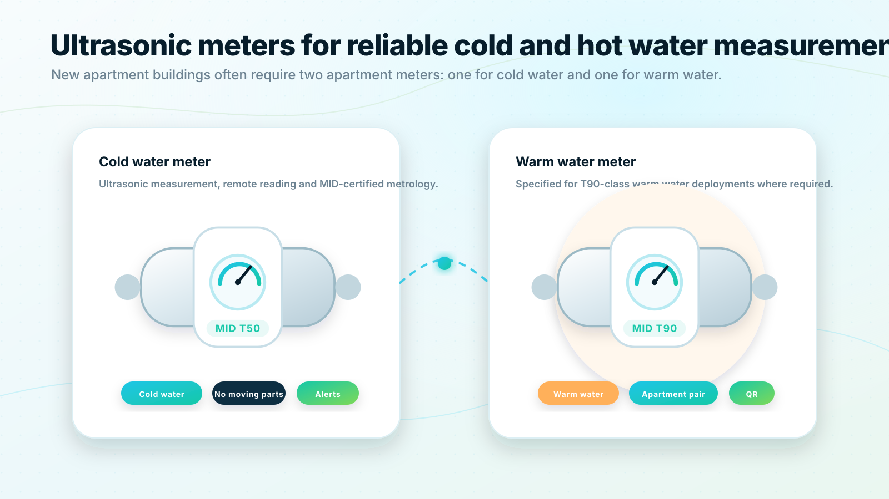

Cold water meter:
T50-class metering for cold water applications.
Meter hardware
QualMeters is built around ultrasonic water meters with MID certification and T50/T90 temperature-class deployment options. In new apartment buildings, a typical specification often includes two meters per apartment: one for cold water and one for warm water.

Ultrasonic water meters
Ultrasonic meters measure flow electronically rather than relying on a traditional mechanical measuring mechanism. For digital metering systems, this makes them well suited for remote reading, interval data collection and long-term monitoring.
QualMeters specifies ultrasonic water meters for reliable apartment-level data. The meters become part of a connected system: each meter can be identified, read remotely, associated with an apartment or property, and monitored through the cloud platform.
Ultrasonic water meters
Modern apartment buildings commonly need separate measurement for cold and warm water. QualMeters supports this model by structuring the platform around apartment-level meter pairs, meter metadata and clear resident-facing consumption views.
T50-class metering for cold water applications.
T90-class metering for warm water applications where specified.
View cold and warm water consumption together in dashboards and resident portals.
Each meter includes a QR code that can open the correct meter view for the resident access process.
Ultrasonic water meters
The meter is not only hardware. It needs a lifecycle record: installation date, serial number, MID data, temperature class, apartment association, communication method, firmware information, reading schedule and maintenance status.
QualMeters should maintain this lifecycle information so organizations can track device status, plan replacements and keep metering data trustworthy over time.
Ultrasonic water meters
QualMeters can support early planning for new buildings, retrofit projects and portfolio-wide meter standardization.
Talk to a metering specialistSales consultation
Share your building type, meter count, communication requirements and integration needs. QualMeters will help you map the right deployment model and next steps.
No obligation. We will start by understanding your existing meters, buildings and goals.
 Request a demo
Request a demo